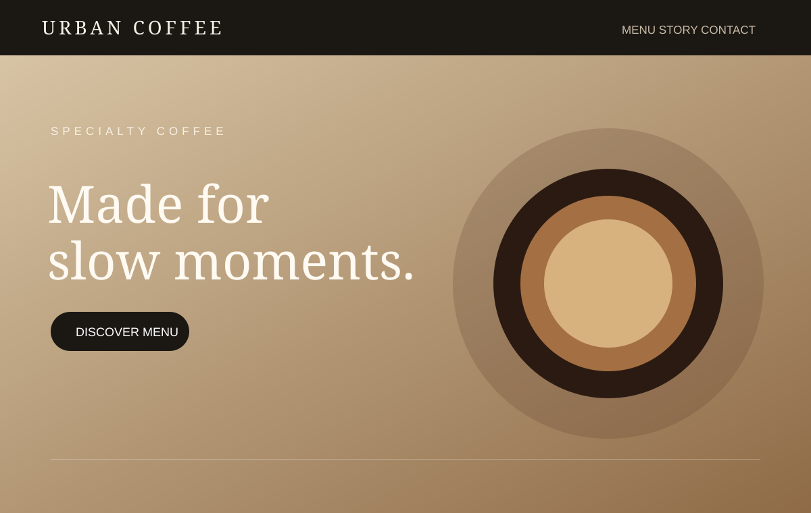

Concept DemoWebsite de prezentare
Urban Coffee
O cafenea avea nevoie de o prezență online modernă pentru a prezenta meniul și locația.
Am proiectat un site rapid, optimizat pentru mobil, cu galerie foto, meniu digital și secțiune de contact.
Next.js
TypeScript
Tailwind CSS
Framer Motion
Un exemplu de experiență modernă pentru o cafenea care dorește o imagine profesională online.